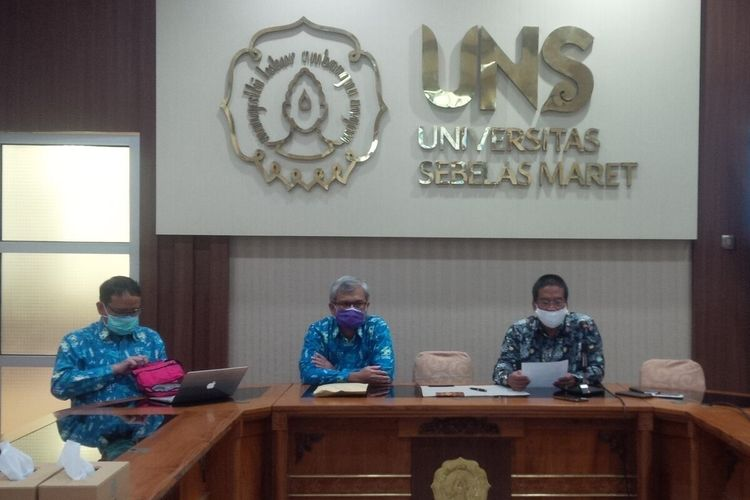

Mahasiswi FK UNS Positif Corona, Rektor sebut kondisinya Membaik

SOLO, KOMPAS.com - Rektor Universitas Sebelas Maret (UNS) Solo, Jamal Wiwoho membenarkan satu mahasiswinya terkonfirmasi positif coronavirus disease alias Covid-19.
Hal tersebut disampaikan Jamal didampingi Direktur RS UNS Hartono, Jubir Satgas Covid-19 RS UNS Tonang Dwi Ardyanto dan Dekan Fakultas Kedokteran Reviono dalam konferensi pers di Rektorat UNS Solo, Jawa Tengah, Jumat (17/4/2020).
"Mengenai adanya mahasiswa UNS yang dinyatakan positif Covid-19, kami menyampaikan bahwa benar. Pada tanggal 12 April 2020, kami melaporkan secara resmi kepada Kepala Dinas Kesehatan Kota Solo tentang hasil PCR Covid-19 pada seorang pasien dengan hasil positif," kata Jamal.
Mahasiswi asal Bekasi ini masih dirawat di ruang isolasi RS UNS Jalan A Yani No 200, Dusun II, Makamhaji, Kartasura, Kabupaten Sukoharjo, Jawa Tengah.
"Pasien dalam keadaan baik. Dirawat sesuai standar Kementerian Kesehatan," terang Jamal.
Jubir Satgas Covid-19 RS UNS, Tonang Dwi Ardyanto menambahkan, mahasiswi ini masuk RS UNS, Sabtu (4/4/2020), sebagai pasien dalam pengawasan (PDP) karena mengalami gejala demam.
Kemudian, ia dinyatakan positif Covid-19 setelah hasil pemeriksaan swab tenggorokan pasien tersebut keluar, Minggu (12/4/2020).
"Hasil swab tenggorokan pasien keluar tanggal 12 April 2020 dengan hasil positif," ungkap Tonang.
Tonang menyampaikan, saat ini merupakan hari ke-13 pasien positif Covid-19 dirawat di RS UNS. Pasien ini dalam kondisi baik.
"Hasil swab yang sempat positif di awal harapan kita segera negatif. Kalau sudah memenuhi prosedur dua kali negatif (swab), Insya Allah kita pulangkan," ujarnya.
Dekan Fakultas Kedokteran UNS, Reviono mengatakan, pasien positif Covid-19 merupakan mahasiswi Fakultas Kedokteran. Sebelumnya, pasien pulang ke Jakarta karena kerabatnya meninggal.
"Kerabatnya meninggal sehingga ke Jakarta. Kembali ke Solo terus demam. Dia segera melapor kemudian dirawat diisolasi RS UNS," ujar Reviono. Karena tinggal di indekos, pihaknya meminta seluruh teman pasien positif Covid-19 tersebut untuk melaksanakan proses karantina mandiri selama 14 hari.
Halaman Selanjutnya
Universitas Sebelas Maret
Sekolah Vokasi
Jl. Kolonel Sutarto 150 K,
Jebres Surakarta. 57126
0271-664126
Vokasi.uns.@gmail.com
Layanan